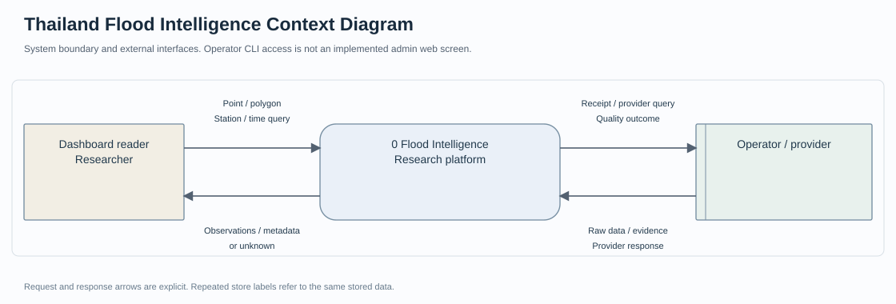
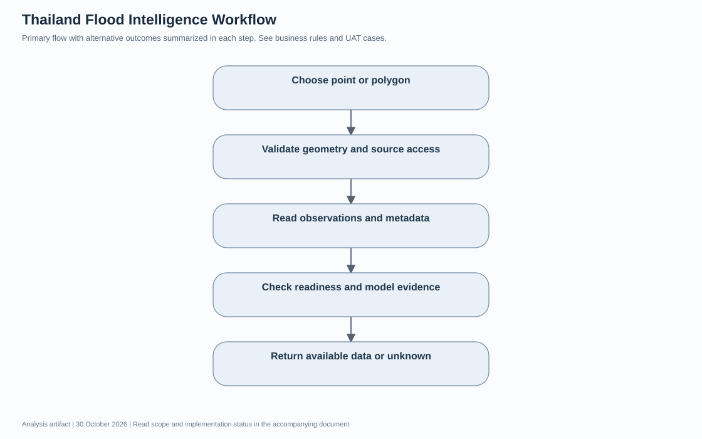
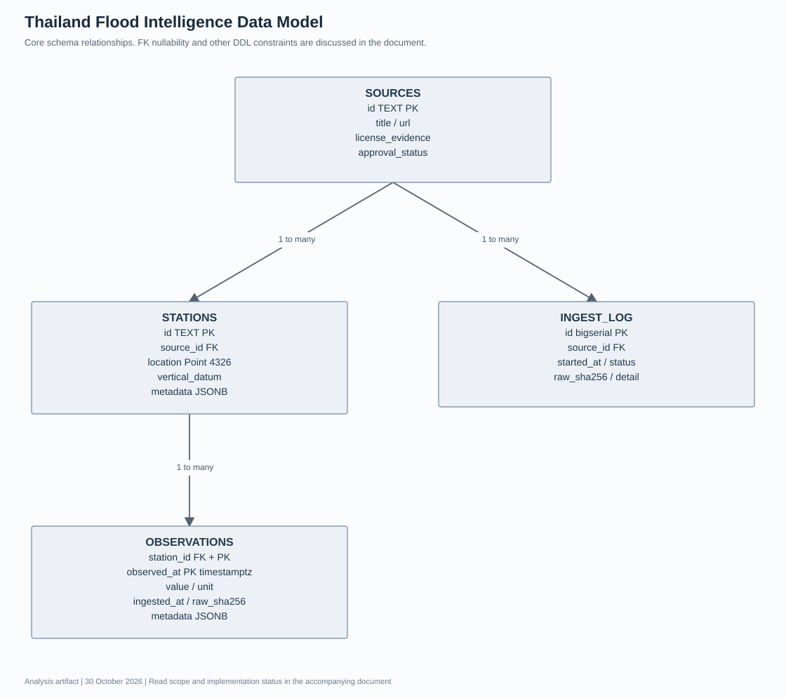

Thailand Flood Intelligence เอกสารวิเคราะห์ความต้องการและออกแบบระบบ
รุ่นเอกสาร 1.0 · วันที่ 30 October 2026 · ผู้จัดทำ Panupong Intasan โดยใช้ AI assistance ใน ChatGPT Work
ให้ประชาชนและนักวิจัยดูข้อมูลตำแหน่ง ความสูงพื้นผิว และข้อมูลสถานีที่มี provenance พร้อมแสดงความพร้อมและข้อจำกัด ระบบยังไม่เปิดความเสี่ยงน้ำท่วมรายที่ดิน ไม่มี live gauge feed และไม่มี hydraulic pilot ที่รับรองแล้ว
สถานะเอกสาร: จัดทำใหม่จากการอ่านโค้ด ณ commit 6c1ca635e649e3fd83bbe4890d99fdf38c0eb941 เพื่ออธิบายระบบและใช้ตรวจรับ ไม่ใช่บันทึกการสัมภาษณ์หรือหลักฐานว่าผู้มีส่วนได้ส่วนเสียอนุมัติ Requirement แล้ว รายการที่ยังต้องตัดสินใจอยู่ในหัวข้อคำถามยืนยัน
อ่านฉบับเว็บบน Portfolio · ไฟล์ HTML · Diagram source
1 เป้าหมาย ผู้ใช้งาน และขอบเขต
| ผู้เกี่ยวข้อง | หน้าที่ |
|---|---|
| ผู้ใช้ Dashboard | ค้นตำแหน่ง วาด/นำเข้าแปลง และอ่านข้อมูลย้อนหลังที่มี |
| นักวิจัย | เรียก API ตรวจ source เวลา หน่วย datum และผลตรวจแพ็กเกจ |
| ผู้ดูแลข้อมูล | นำเข้าข้อมูลที่มีสิทธิ์ใช้และตรวจ quarantine / ingest log |
| ผู้ตรวจแบบจำลอง | เตรียม review evidence และลงนามตามกระบวนการภายนอก ไม่ใช่ Admin UI |
อยู่ในขอบเขต: Map/parcel tools, approved historical observations, data provenance, research API, offline audit/export และ readiness reporting
อยู่นอกขอบเขต: ผลน้ำท่วมรายบ้านที่รับรองแล้ว การจำลอง hydraulic จริง live gauge feed การรังวัดระดับที่ดิน และระบบเตือนภัย Production
2 วิธีเก็บและยืนยันความต้องการ
เอกสารรอบนี้ใช้ source review, schema review และผลทดสอบที่มีอยู่เป็น input ข้อกำหนดแบบ As implemented ใช้อธิบายพฤติกรรมที่พบในโค้ด ส่วน To be เป็นข้อเสนอหรือคำถามที่ยังไม่ได้อนุมัติ ไม่มีการสร้างชื่อผู้ให้สัมภาษณ์ วันประชุม หรือผลลงนามย้อนหลัง
กระบวนการยืนยันที่เสนอคือให้ผู้ใช้งานหลักทบทวน scope และ Business Rules จากนั้นเดินผ่าน scenario ปกติและข้อผิดพลาด บันทึกคำตอบพร้อมผู้ตัดสินใจ แล้วปรับ version ของ Requirement และ UAT ก่อนรับรองการใช้งานจริง
3 Functional Requirements และเกณฑ์ยอมรับ
ทุกแถวต่อไปนี้เป็น As implemented จากโค้ด คอลัมน์หลักฐานแยกสิ่งที่มีการทดสอบเดิมกับสิ่งที่เพียงพบใน source การจัดทำเอกสารไม่ได้ทำให้ผลทดสอบที่ยังรออยู่กลายเป็นผ่าน
| รหัส | ความต้องการ | เกณฑ์ยอมรับ | Source | หลักฐานหรือสถานะ |
|---|---|---|---|---|
| F-FR01 | รับพิกัดและ Polygon ที่ถูกต้อง | /v1/assess ตรวจ lat/lon และ /parcels/assess รับ 2D WGS84 Polygon ที่ valid ไม่เกิน 1000 vertices | backend/app/main.py | มี tests/test_api.py ใน repo |
| F-FR02 | คืน unknown เมื่อยังไม่มีผลที่รับรอง | assessment ส่ง status unsupported, risk unknown และค่าความลึก/ระยะเวลา null | backend/app/main.py | มี tests/test_api.py ใน repo |
| F-FR03 | คำนวณพื้นที่แปลงและรูในแปลง | พื้นที่แบบ WGS84 ellipsoidal; จุดตัวแทนใช้แสดงผล ไม่ใช่วิเคราะห์ทั้งแปลง | backend/app/main.py | มี tests/test_api.py ใน repo |
| F-FR04 | ค้นตำแหน่งและความสูงจาก provider | ตรวจและ cache payload ตาม providers.py; upstream ใช้ไม่ได้ให้ตอบข้อผิดพลาด | backend/app/providers.py | มี tests/test_providers.py ใน repo |
| F-FR05 | เปิดข้อมูลสถานีเฉพาะ source อนุมัติ | query ต้องมี approval_status approved และ license_evidence ไม่ว่าง | backend/app/repository.py | มี tests/test_postgis.py ใน repo |
| F-FR06 | คืน series โดยไม่เติมค่าที่หาย | /observations ส่งแถวจริงและ gaps ไม่ interpolation; ช่วงเวลาไม่เกิน 31 วันและไม่เกิน 10000 แถว | backend/app/repository.py | มี tests/test_postgis.py ใน repo |
| F-FR07 | นำเข้าแบบ atomic และเก็บ provenance | validate ข้อมูล source เวลา หน่วยและ hash ก่อนบันทึก/กักกันตามตัวนำเข้า | backend/app/ingest.py | มี tests/test_ingest.py ใน repo |
| F-FR08 | รายงาน readiness ตามข้อมูลจริง | แยก archive, live, survey, model และ risk; DB ใช้ไม่ได้ต้องไม่แสดงเป็น 0 ที่ดูเหมือนมีข้อมูลครบ | backend/app/main.py | มี tests/test_api.py ใน repo |
| F-FR09 | ตรวจแพ็กเกจโมเดลก่อน Research API อ่าน | ตรวจหลักฐานและลายเซ็น/ไฟล์ตาม model gates; ไม่เท่ากับรับรองฟิสิกส์ของแบบจำลอง | backend/app/models.py | มี tests/test_models.py ใน repo |
| F-FR10 | ส่งออก observation ด้วยคำขอที่ระบุขอบเขต | manual Airflow export ระบุสถานี ช่วงเวลา request ID และสิทธิ์ใช้ ไม่สร้าง simulated series | pipelines/dags/hii_observation_export.py | มี tests/test_export_job.py และ VERIFICATION.md |
4 Business Rules
- sources ที่ไม่ approved หรือไม่มี license evidence ไม่ถูกนำมาแสดงใน public queries
- ระดับสถานีไม่ใช่ระดับน้ำของที่ดิน; datum ของสองแหล่งต่างกันห้ามลบกันเพื่ออ้างความลึกท่วม
- ค่า 0 และค่าติดลบที่มีคุณภาพผ่านเป็นค่าจริงได้ ห้ามแทน missing ด้วย 0
- freshness ของสถานีใช้เกณฑ์ 3600 วินาทีใน repository.py; gaps มากกว่า 900 วินาทีเป็นตัวบอกช่องว่างของระบบ ไม่ใช่ rating ทางการ
- model_runs เป็นตารางใน schema แต่ research model gate อ่านแพ็กเกจไฟล์; ห้ามตีความว่าตารางนี้แปลว่ามี solver หรือ model ที่อนุมัติแล้ว
5 Non Functional Requirements
| รหัส | ประเด็น | เกณฑ์และสถานะ |
|---|---|---|
| flood-NFR01 | Data integrity | ใช้การตรวจสอบ input และการบันทึกที่สอดคล้องกับ business rules; ดูข้อจำกัดรายโครงการด้านล่าง |
| flood-NFR02 | Access control | ตรวจสิทธิ์ที่ server ตาม actor และ endpoint; ไม่อ้างสิทธิ์ที่ระบบยังไม่มี |
| flood-NFR03 | Observability | ต้องอธิบาย error / unavailable และ provenance ที่มีอยู่; audit trail แบบสมบูรณ์ยังไม่ถือว่ามี |
| flood-NFR04 | Usability | เสนอให้ทดสอบ desktop และ mobile ตั้งแต่ 360 px พร้อม keyboard; ยังไม่มีผลตรวจครบทุกขนาด |
| flood-NFR05 | Performance | ยังไม่มี SLA ที่ผู้เกี่ยวข้องอนุมัติ ต้องกำหนดจำนวนผู้ใช้และเกณฑ์ response time ก่อน load test |
| flood-NFR06 | Recovery | เสนอให้ทดสอบสำรองและกู้คืนข้อมูลพร้อมไฟล์ที่สัมพันธ์กัน; RPO/RTO ยังต้องตกลง ไม่กำหนดตัวเลขแทนผู้ใช้ |
6 Context Diagram

อ่านร่วมกับ Mermaid context source ซึ่งแสดงข้อมูลขาเข้าและขาออกแยกทิศทาง Context Diagram กำหนดขอบเขตระบบทั้งก้อน ไม่แสดง data store ภายใน
7 Data Flow Diagram และทะเบียนข้อมูล

ภาพ SVG เป็น process overview แบบย่อ ส่วน DFD Mermaid source และทะเบียนด้านล่างแสดงทิศทาง request/response และ data store อย่างละเอียด ห้ามตีความลูกศรเป็นลำดับเวลาดำเนินงานอย่างเดียว
| Flow | ต้นทาง | ปลายทาง | ข้อมูลที่ส่งไป | ข้อมูลตอบกลับ |
|---|---|---|---|---|
| D01 | Operator / provider | 1.0 Validate / ingest | raw source + rights/provenance metadata | receipt / quarantine / validation error |
| D02 | 1.0 Validate / ingest | D1 Sources Stations + D2 Observations | ตรวจ source และเขียนข้อมูลที่ผ่าน | transaction status / ingest log |
| D03 | Dashboard / researcher | 2.0 Query / readiness | coordinates Polygon station/time query | geometry metadata observations หรือ unknown |
| D04 | 2.0 Query / readiness | D1 Sources Stations + D2 Observations | อ่านเฉพาะ source approved และ licensed | series source datum freshness และ gaps |
| D05 | 2.0 Query / readiness | Model package files / providers | ตรวจแพ็กเกจหรือเรียก provider ตาม endpoint | ผลที่ผ่าน gate หรือ unavailable/rejected |
8 Workflow

- เลือกตำแหน่งหรือแปลง
- ตรวจรูปทรงและอ่าน source ที่อนุญาต
- แสดงสถานี เวลา หน่วย datum และ gaps
- ตรวจ availability และหลักฐานโมเดล
- คืนข้อมูลที่มี หรือ unknown พร้อมเหตุผล
ข้อผิดพลาดต้องส่งผลตาม Requirement ที่เกี่ยวข้องและไม่ข้ามการตรวจสิทธิ์หรือความถูกต้องของข้อมูล แก้ไข Mermaid workflow
9 Data Model และ Data Dictionary

แบบจำลองแสดง core entities ตาม schema ที่ตรวจอ่าน ความสัมพันธ์ที่แอปคาดหวังอาจเข้มกว่าข้อจำกัด nullable ของฐานข้อมูล จึงต้องอ่าน DDL และ validation ประกอบ
| Entity หรือ data store | ข้อมูลหลัก |
|---|---|
| SOURCES | id TEXT PK; title / url; license_evidence; approval_status |
| STATIONS | id TEXT PK; source_id FK; location Point 4326; vertical_datum; metadata JSONB |
| OBSERVATIONS | station_id FK + PK; observed_at PK timestamptz; value / unit; ingested_at / raw_sha256; metadata JSONB |
| INGEST_LOG | id bigserial PK; source_id FK; started_at / status; raw_sha256 / detail |
ERD นี้เลือกแสดง observation path เท่านั้น ตาราง river_reaches มี downstream self reference และ model_runs เก็บ metadata ตาม DDL ไม่ได้หมายความว่า pipeline hydraulic model ทำงานแล้ว ส่วน model gate ใช้แพ็กเกจไฟล์แยกจากตารางดังกล่าว
| Parent | Child | Relationship |
|---|---|---|
| SOURCES | STATIONS | 1 to many |
| STATIONS | OBSERVATIONS | 1 to many |
| SOURCES | INGEST_LOG | 1 to many |
10 UAT และ Requirement Traceability
ตารางนี้เป็น test design และ mapping กับหลักฐานที่มี การผ่าน unit/API test ไม่เท่ากับผู้ใช้ปลายทางลงนาม UAT
| Test ID | Requirement | ขั้นตอนหรือ input | ผลคาดหวัง | สถานะหลักฐาน |
|---|---|---|---|---|
| F-UAT01 | F-FR02 | ถาม risk ณ พิกัดที่ยังไม่รองรับ | unknown / unsupported ไม่แสดงว่าปลอดภัย | มี automated evidence เดิม ไม่รันใหม่รอบเอกสาร |
| F-UAT02 | F-FR01 F-FR03 | Polygon มีรูและรูปร่างเว้า | พื้นที่หักรูและจุดแทนอยู่ในแปลง | มี automated evidence เดิม |
| F-UAT03 | F-FR05 | withdraw source หลังนำเข้า | public query ไม่แสดงข้อมูล source นั้น | มี automated evidence เดิม |
| F-UAT04 | F-FR06 | series มีช่วงข้อมูลขาด | ส่ง gaps และไม่เติมค่าระหว่างจุด | มี automated evidence เดิม |
| F-UAT05 | F-FR08 | หยุดฐานข้อมูล | readiness ระบุ unavailable ไม่ใช่ข้อมูลครบ | มี tests ใน repo |
| F-UAT06 | F-FR09 | package ขาด signature หรือไฟล์ checksum ไม่ตรง | ไม่อนุญาตอ่านผลโมเดล | มี tests ใน repo |
ผู้ตรวจรับ: ยังไม่กำหนด · วันที่ตรวจรับกับผู้ใช้: ยังไม่ดำเนินการในรอบเอกสารนี้ · ผลลงนาม: ยังไม่มี
11 ข้อจำกัดและความเสี่ยง
- ERD แสดงเฉพาะ core observation path; ยังมี river_reaches และ model_runs ใน DDL ซึ่งไม่ใช่ solver ที่ใช้งานแล้ว
- เอกสาร VERIFICATION.md เก็บหลักฐาน CI เดิม แต่การจัดทำเอกสารรอบนี้ไม่ได้รัน pipeline หรือรับรองโมเดลซ้ำ
- ต้องมี visual/WebGL/GPS QA และการตรวจทางอุทกวิทยาก่อนเปิดผลสาธารณะ
12 คำถามที่ต้องยืนยันก่อนขยายระบบ
- พื้นที่นำร่องและเหตุการณ์ใดจะใช้ calibration/validation แยกกัน
- ใครเป็นผู้ตรวจที่รับรองได้และมีอำนาจอนุมัติการเผยแพร่ผล
- แหล่ง live feed ที่มีสิทธิ์ใช้มีไหนบ้างและมี SLA อย่างไร
- ต้องแปลง vertical datum ด้วยข้อมูลสำรวจชุดใดและใครตรวจความถูกต้อง
- ผลสาธารณะควรใช้ระดับความไม่แน่นอนและคำเตือนแบบใดเมื่อข้อมูลบางส่วนหาย
13 Source Baseline และประวัติเอกสาร
- backend/app/main.py
- backend/app/repository.py
- backend/app/ingest.py
- backend/app/models.py
- db/001_init.sql
- db/002_provenance.sql
- docs/VERIFICATION.md
| Version | วันที่ | รายการเปลี่ยนแปลง |
|---|---|---|
| 1.0 | 30 October 2026 | จัดทำ requirement catalogue, data flow register, diagrams, data dictionary และ UAT traceability จาก source baseline |
เอกสารวิเคราะห์และไดอะแกรมเป็น deliverable ใหม่ ไม่ใช่ภาพหน้าจอหรือหลักฐานผลการทำงานที่ยังไม่ได้ทดสอบ ไม่มีการอ่านหรือแก้ repository ที่ผู้ใช้ระบุให้ยกเว้น